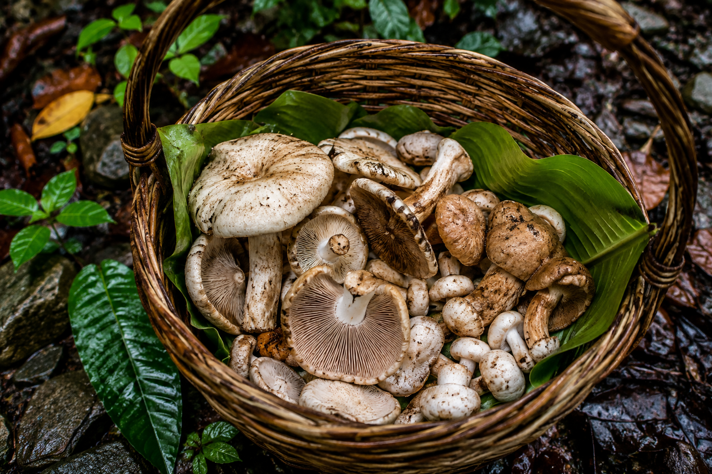
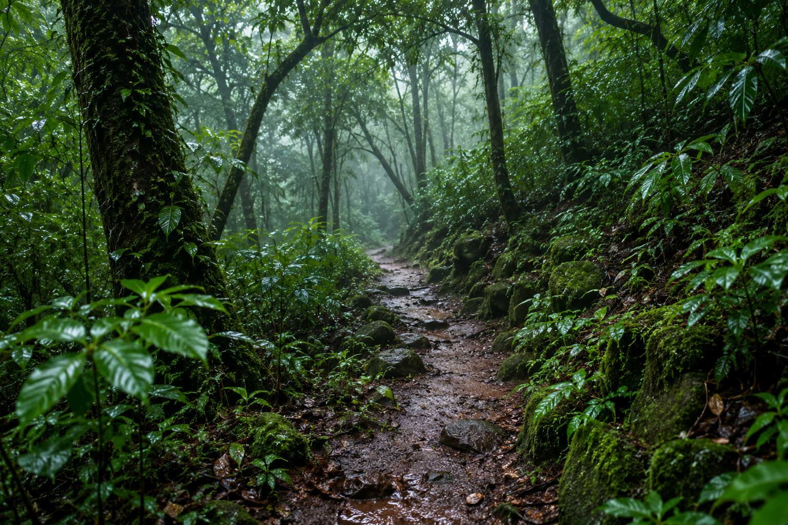

The first proper rain changes the conversation. The air cools, the earth darkens, and people begin asking what has appeared along the paths and under the trees.
Monsoon food is not only about comfort. It is about attention: knowing when something is in season, noticing how quickly it passes, and making room for it while it is here.
In Goa, the rains bring a different rhythm to the table. The ingredients are often humble and immediate, but the anticipation around them is not. A seasonal find can become the reason a family gathers for lunch.
“The rains teach us to wait, then to notice what the waiting has made possible.”
These traditions are held together by observation. Someone remembers where to look. Someone knows which leaves to avoid. Someone has a way of cleaning, slicing or preserving that never needed writing down.



The journal will grow with more of these seasonal notes, and—with the right introductions—stories from farmers and family producers themselves. Those pieces deserve to be made with their participation, not filled in from a distance.